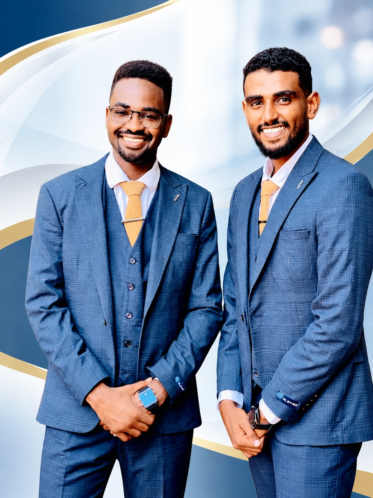

نحنا خرّيجين كلية الطب، جامعة شندي (Shendi University)، ومؤسّسين سلسلة Student Master Note. قعدنا سنين في قاعات الدراسة وسهر الليالي قبل الامتحانات، وشفنا بعيوننا الطالب بيضيّع وقته كيف بين المراجع الكبيرة والملخّصات المشتّتة. عشان كدا قرّرنا نعمل المرجع الكان نفسنا يكون معانا ونحنا طلاب.
Pediatrics Master Review هو كتاب الأطفال في السلسلة، بعد Obstetrics Master Review وSurgery Master Review. كل موضوع في صفحات قليلة: ليه بيحصل، تلقى شنو في الكشف، والجرعات بالـkg الشغّالة في مستشفياتنا. مشينا فيه على البروتوكولات السودانية وبرامج IMCI وETAT وعلاج سوء التغذية، وراجعناه على المراجع العالمية وآخر توصيات WHO. ومعاه flashcards، وبنك أسئلة (QBank)، ومحطّات OSCE، ودليل لأدوية الأطفال وجرعاتها.
نتمنّى الشغل دا يكون خالص لوجه الله، وعلم يُنتفع به، وصدقة جارية لينا ولأهلنا ولأساتذتنا.
لو لقيت فيه فايدة ما تنسانا من دعوة صالحة، ولو لقيت غلطة كلّمنا عشان نصلّحها في الطبعة الجاية.
الزول البيتابع الشغل في الكتاب دا من جوّا بيشوف دكاترة شباب ما بيرضوا بالساهل: بيراجعوا كل سطر، وبيسألوا عن كل معلومة: صاح ولا لا؟ بتجي في الامتحان؟ ودا فعلاً البنعمله في عنابر الأطفال عندنا؟ رتّبوا الصفحات وصمّموها مرّة ورا مرّة لحدّي ما بقت زي ما دايرينها لزملائهم. الكتاب دا ثمرة إيمانهم إنه العلم بيتشارك، وإنه طالب الطب في السودان يستاهل أحسن الأدوات.